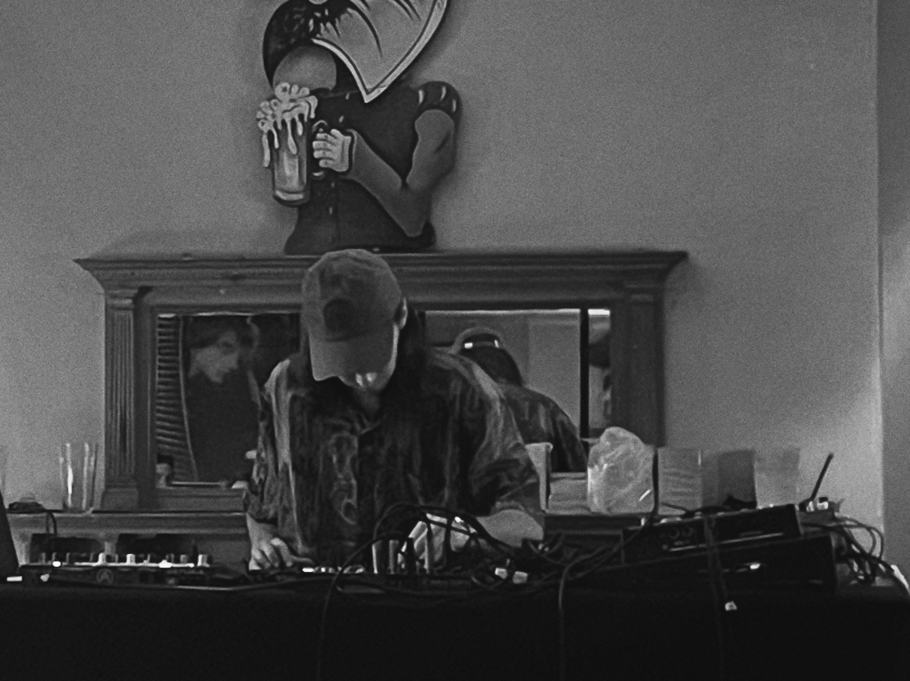

Welcome
Based in Sheffield, I am a classical guitarist, ensemble pianist, and the music technician for the Doncaster Music Service. With an MA in Music Performance and Production from Falmouth University, I specialize in both live performance and technical audio production.
